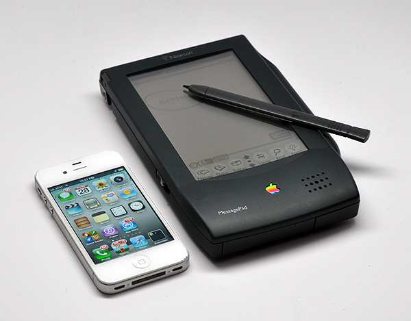
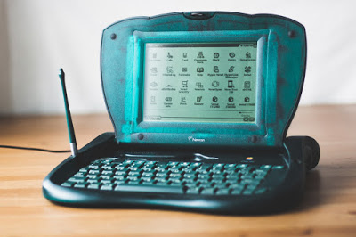

 The Newton MessagePad is the first in a family of communications assistants from Apple. By combining Newton Intelligence technology with sophisticated communications capabilities, the Newton MessagePads help you stay in touch with friends and colleagues, organize your life, and keep track of your ideas. You can take notes. Make a quick sketch. Format and print letters. Share and synchronize information with your personal computer. Send a fax. Receive pages and messages. Tap into on-line services or electronic mail. Even exchange business cards with a colleague via built-in infrared technology. Newton was conceived on an airplane. That's where Michael Tchao pitched the idea to Apple's CEO, John Sculley, in early 1991. The company would announce it the following year, and the first product in the Newton Line, the MessagePad 1001 went on sale twenty years ago this week in August of 1993. It was Apple's handheld PDA - a term Apple coined to describe it. By modern standards, it was pretty basic. It could take notes, store contacts, and manage calendars. You could use it to send a fax. It had a stylus, and could even translate handwriting into text. Well, sort of. At the time, this was highly ambitious. Handheld computers were still largely the stuff of science fiction.
 The Apple Newton may forever be a joke when it comes to its handwriting recognition. However, it is also remembered for being one of the first personal digital assistant. The handwriting recognition technology was ahead of its time. So much so that much of the handwriting recognition technology used today at Apple is a result of the Apple Newton's technology. The Newton was short lived and was discontinued once Steve Jobs became the CEO due to his reported dislike for stylus. In the meanwhile personal digital assistants started to rise is popularity. The Newton had a short life, but garnered a loyal following, with active users more than 20 years after it was cancelled. The technology and ideas in the Newton eventually made their way into the iPhone and now live in billions of devices around the world. The later handwriting recognition system, Print Recognizer, made its way into OS X and could be used with a pen tablet. Ten years after the end of the Apple Newton was the iPhone. The legendary iPhone used an elevated touchscreen technology from the Newton. People could now use their fingers to navigate the touchscreen.